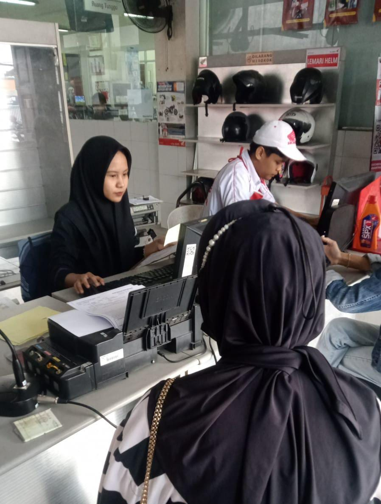

PENGALAMAN DAN PENCAPAIAN
My Experience.
Berikut merupakan pengalaman yang pernah saya dapatkan selama menempuh pendidikan. Pengalaman ini menjadi kesempatan bagi saya untuk mengembangkan kemampuan, menambah pengetahuan, dan mempersiapkan diri menghadapi dunia kerja.

PRAKTIK KERJA LAPANGAN
Pengalaman Magang
Sebelum melanjutkan pendidikan ke perguruan tinggi, saya pernah mendapatkan pengalaman praktik kerja lapangan saat sekolah. Melalui kegiatan magang ini, saya belajar mengenal lingkungan kerja, meningkatkan kedisiplinan, bertanggung jawab, serta menerapkan ilmu yang telah dipelajari selama di sekolah.